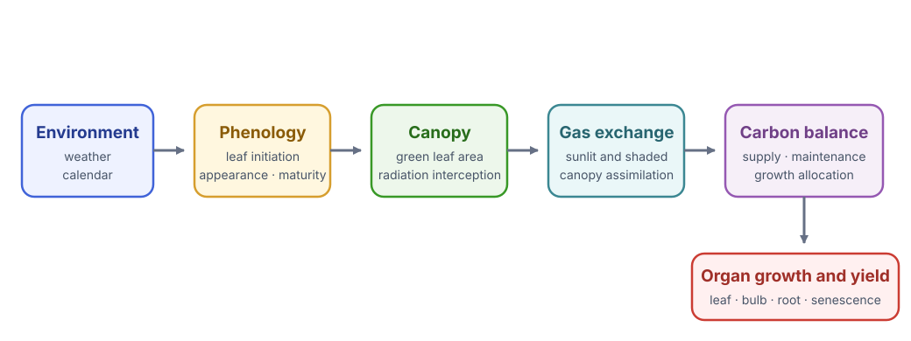
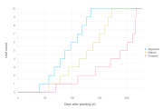
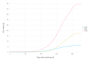
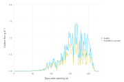
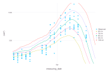
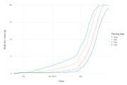

Garlic Growth Model
Garlic.jl is a process-based hardneck garlic model implemented as a set of Cropbox systems. It is a useful example of composition across phenology, weather, radiation, gas exchange, morphology, carbon balance, and organ growth.
The model was developed in two stages: leaf development and expansion in A process-based model for leaf development and growth in hardneck garlic (Annals of Botany, 2019), followed by whole-plant carbon balance, biomass, and yield in An Integrative Process-Based Model for Biomass and Yield Estimation of Hardneck Garlic (Frontiers in Plant Science, 2022). The process chain below connects those two scopes.
Garlic is not a dependency of the Cropbox documentation project. Run this tutorial in an environment where Garlic is installed. The basic workflow follows the model package tests and the 2025 Cropbox workshop.
Install and load
using Pkg
Pkg.add("Cropbox")
Pkg.add("Garlic")
using Cropbox
using Garlic
import DatesInspect the model before running it
look(Garlic.Model)
parameters(Garlic.Model; alias = true)
parameters(Garlic.Model;
alias = true,
recursive = true,
exclude = (Context,),
)The recursive parameter list is intentionally large. A whole-plant model is easier to understand component by component. Useful starting systems include Garlic.Phenology, Garlic.Photosynthesis, Garlic.Weight, and Garlic.Water.
Keep this process chain in mind while reading the output:
| Stage | Useful outputs | Question answered |
|---|---|---|
| calendar and phenology | time, DAP, leaf counts | Is the plant in the expected stage? |
| canopy development | green_leaf_area, LAI | How much active leaf area intercepts light? |
| assimilation and carbon | A_gross, carbon_supply, total_carbon | How much carbon is available for growth? |
| allocation and survival | organ masses, dropped area | Where did that carbon go, and how much tissue remains alive? |

The model proceeds from environment and phenology to canopy gas exchange and carbon allocation and organ growth.
The final mass curve is an outcome of this chain, not a growth curve fitted directly to time.
In the current implementation, leaf phenology and expansion determine green_leaf_area, which controls LAI, radiation interception, and carbon supply. Accumulated leaf mass does not feed back to leaf area through a specific-leaf-area equation: the leaf-level carbon_effect is fixed at 1.0. SLA is calculated as a diagnostic, and a fixed SLA value is used when estimating potential leaf carbon demand. The process diagram therefore shows the implemented forward path rather than a general SLA-based crop-model feedback.
Use a packaged configuration
Garlic includes complete parameter and environment sets under Garlic.Examples. The following set represents the Korean Mountain cultivar grown in Seattle for an experiment used by the model.
config = @config Garlic.Examples.AoB.KM_2014_P2_SR0Keep the example configuration intact as a reproducible base. Apply small scenario patches after it rather than copying hundreds of values into a new tuple.
Run one daily-output simulation
The model updates hourly. Its calendar.count value gives the number of updates between configured start and end dates. Save one row at noon each day:
result = simulate(Garlic.Model;
config,
stop = "calendar.count",
snap = s -> Dates.hour(s.calendar.time') == 12,
)stop and output paths may be strings when they refer to nested systems. The snapshot function receives the root instance and uses ' to retrieve the calendar value.
Check completion before plotting:
result[end, [:DAP, :leaves_initiated, :total_mass]]Also inspect the first and last time values and the number of saved rows. If the last date is unexpectedly early, check the packaged calendar, weather coverage, and the snap predicate before interpreting plant output.
Follow leaf development
visualize(result,
:DAP,
[:leaves_appeared, :leaves_mature, :leaves_dropped];
names = ["Appeared", "Mature", "Dropped"],
kind = :step,
)
Initiated leaves appear, mature, and eventually drop in a biologically ordered sequence. Step geometry preserves the count-variable interpretation.
A step plot matches count variables better than an interpolated line. Plot initiated and appeared leaves together when diagnosing phenology.
visualize(result,
:DAP,
[:leaves_initiated, :leaves_appeared];
kind = :step,
)leaves_initiated counts primordia already formed at the apex; leaves_appeared counts leaves visible above the soil or sheath. Mature and dropped counts describe later states of those leaves. Their ordering provides a quick consistency check even before leaf area is plotted.
Leaf area and biomass
visualize(result, :DAP, :green_leaf_area; kind = :line)
visualize(result,
:DAP,
[:leaf_mass, :bulb_mass, :total_mass];
names = ["Leaf", "Bulb", "Total"],
kind = :line,
)
Leaf, bulb, and total dry mass from the packaged Korean Mountain cultivar configuration.
Interpret these outputs together. Biomass partitioning depends on phenological stage, while phenology-driven green leaf area controls radiation interception and carbon supply.
Trace the carbon path
The workshop follows gross canopy photosynthesis through carbon supply to the carbon available for organ growth. These variables have different units, so plot them separately rather than forcing them onto one axis.
visualize(result, :DAP, :A_gross; kind = :line)
visualize(result,
:DAP,
[:carbon_supply, :total_carbon];
names = ["Supply", "Available for growth"],
kind = :line,
)
visualize(result,
:DAP,
:(total_carbon / total_mass);
ylab = "Relative growth rate",
kind = :line,
)
Daily carbon supply and carbon available for growth. Weather-driven variation is retained rather than smoothed away.
A_gross is a canopy flux. carbon_supply converts assimilated carbon to the plant basis and releases it from the carbon pool; total_carbon also reflects maintenance and growth conversion before partitioning. The derived ratio is a diagnostic, not a separately fitted model parameter. A strange final mass can therefore be traced upstream instead of corrected immediately with an allocation parameter.
Compare observations and a parameter sweep
The workshop overlays measured leaf area with several values of LM_min, the minimum length of the model's longest leaf. This combines an observation plot and a grouped model sweep without changing the packaged base configuration.
using CSV
using DataFrames
observed = CSV.read(
Garlic.datapath("Korea/ricca_2014_field.csv"),
DataFrame,
) |> unitfy
p = visualize(observed, :measuring_date, :leaf_area;
name = "Observed",
kind = :scatter,
)
visualize!(p, Garlic.Model, :time, :green_leaf_area;
config = Garlic.Examples.RCP.ND_RICCA_2014_field,
stop = "calendar.count",
snap = 1u"d",
group = Garlic.Leaf => :LM_min => [60, 70, 80, 90, 100],
legend = "LM_min",
kind = :line,
)
Observed leaf area overlaid with an LM_min sensitivity sweep. The plot shows whether the parameter moves the trajectory as expected; it is not by itself a calibration result.
Treat this first as a sensitivity check: does the parameter move the output in the expected direction and period? Selecting the visually closest line is not calibration. Formal fitting also needs a stated metric, defensible bounds, and independent validation; see Evaluate and Calibrate Models.
Compare planting dates
The 2025 workshop varies one parameter while retaining a packaged regional configuration. The pattern is:
base = Garlic.Examples.RCP.ND_RICCA_2014_field
planting_dates = [
ZonedDateTime(2014, 9, 1, tz"Asia/Seoul"),
ZonedDateTime(2014, 10, 1, tz"Asia/Seoul"),
ZonedDateTime(2014, 11, 1, tz"Asia/Seoul"),
ZonedDateTime(2014, 12, 1, tz"Asia/Seoul"),
]
visualize(Garlic.Model, :time, :bulb_mass;
config = (
base,
Calendar => :init => ZonedDateTime(2014, 9, 1, tz"Asia/Seoul"),
),
stop = "calendar.count",
snap = 1u"d",
group = Garlic.Phenology => :planting_date => planting_dates,
legend = "Planting date",
names = ["Sep", "Oct", "Nov", "Dec"],
kind = :line,
)
Changing planting date shifts the timing of bulb growth under the shared weather record. Comparing final values alone would hide most of this response.
For a scientific comparison, ensure every planting date has sufficient weather coverage and use the same cultivar, site, soil, and harvest rule.
Collect organ-level output
Dynamic nodal units and leaves are not ordinary scalar columns. snatch can add one column per leaf rank at snapshot time:
ranked = simulate(Garlic.Model;
config,
index = :time,
target = [],
stop = "calendar.count",
snap = 1u"d",
snatch = (rows, s) -> begin
for nu in s.NU
rows[end][Symbol(nu.rank')] = nu.leaf.green_area'
end
end,
)This is intentionally advanced. The set of columns can change as organs are produced, so downstream code must handle missing ranks. Prefer aggregate outputs for routine calibration and reserve organ-level extraction for morphology questions. The general snatch lifecycle and output rules are documented in Simulation.
A diagnostic order for whole-plant results
When yield or bulb mass looks wrong, inspect processes upstream in this order:
- calendar, weather coverage, and planting date;
- development phase and leaf initiation/appearance;
- green leaf area and
LAI; - sunlit/shaded irradiance and gas exchange;
- carbon supply and growth rate;
- organ partitioning, senescence, and final mass.
Changing a final partition parameter before checking upstream limitations can fit one output while making the internal model inconsistent.
For plotting variants used above—including grouped systems, observation overlays, and expression targets—see Visualization.